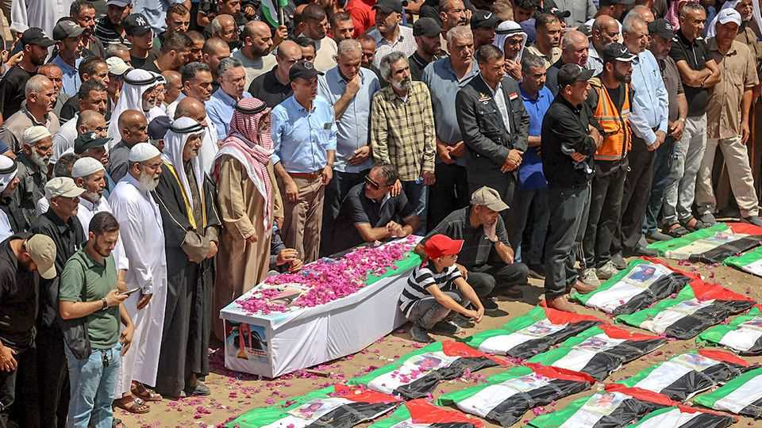

More “peace” and more funerals in Gaza
Despite Trump’s declarations, Gazans remain hostages to Israeli politics

Aug 6th 2026
Ten months after the ceasefire that was supposed to end the war between Israel and Hamas, Gazans are still burying their dead. On August 4th a funeral was held in the Sabra district of Gaza city for 112 people killed by an Israeli air strike in November 2023. Thousands are still missing. Israel still does not allow heavy machinery, needed for excavating the ruins and rebuilding, into the strip. The slow pace at which bodies are being retrieved from beneath the rubble is a stark reminder of the lack of any progress in Gaza.
An announcement from Donald Trump seemed to herald a breakthrough. On July 30th the American president proclaimed “a historic agreement for the complete disarmament of Hamas and all other armed groups in Gaza”. It was, he said, “a monumental step towards lasting peace and security”.
The president’s florid words were supported, more soberly, by the Board of Peace he founded in January to oversee implementation of the ceasefire. Its road map laid out steps for the disarmament of Hamas as well as a full Israeli withdrawal from the territory, the transfer of power from Hamas to a new Palestinian technocratic authority, and the creation of conditions for the reconstruction of the devastated coastal strip.
The two belligerents were quick to push back against Mr Trump’s declaration. A senior Hamas official said the group was not disarming; it would simply be storing its weapons in Gaza under Palestinian supervision. Binyamin Netanyahu, Israel’s prime minister, took five days to respond to Mr Trump’s announcement. He then issued a statement which did not confirm that Israel had accepted the deal. He merely said that his government was “looking into it”. In the meantime, his officials had been briefing anonymously that Israel had no intention of ceasing its operations against Hamas in Gaza or withdrawing before Hamas’s military capabilities were fully dismantled. Israel then launched a flurry of air strikes in Gaza, killing 19 people in just 24 hours.
There is a similar dynamic on each side. Both have been under pressure for months, Israel from America and Hamas from Egypt, which (along with Israel) controls access to Gaza, and its patrons, Qatar and Turkey. Both hope the other scuppers the deal. “No one is holding their breath,” says an Israeli official. “We don’t believe Hamas will ever disarm voluntarily.”
Much remains unclear. The Board of Peace said a timetable for disarmament would be worked out within 14 days, but it did not specify when that period would begin and noted that it could be extended. Beyond that, how will the decommissioning of Hamas’s arsenal take place and who will be the members of a new International Verification Committee? What will be the sequencing between disarmament and further Israeli withdrawals? How will power be transferred from the current Hamas government to the new National Committee for Administration of Gaza (ncag)?
Under pressure from America, on July 26th the Israeli cabinet voted to allow the 15 ncag members to enter Gaza at last and the initial deployment of the International Stabilisation Force (isf). But the date for the NCAG’s arrival has not been set, nor is there much idea how it will wield power in Gaza. The same is true of the first 200 isf peacekeepers, expected from Morocco and Uganda. Israel is demanding that its troops be allowed to continue operating in areas where the isf is nominally in charge.
This continues a pattern of obstruction by Israel’s government ever since Mr Trump presented his peace plan in October 2025, aimed at ending the Gazan war in which over 73,000 people, mostly civilians, have been killed. Israeli forces have kept up their air strikes, albeit at a lower tempo than during the war, killing over 1,200 Gazans since the ceasefire, and have steadily encroached beyond the “yellow line”, the boundary between the half of Gaza controlled by Hamas and the half occupied by Israel. Gaza’s 2.1m inhabitants are now huddled in about a third of its total area. Around three-quarters are displaced, their homes either destroyed or in the Israeli occupation zone, or both. Israeli restrictions on supplies going into Gaza mean that no serious reconstruction has begun.
If there is any glimmer of hope, it is that the argument in Israel about whether to keep the ceasefire is over. In recent months Israeli officials had talked up the prospect of another large-scale campaign in Gaza to enforce disarmament. Mr Trump’s renewed engagement has at least squelched those suggestions for the time being. “Any progress is going to be at a snail’s pace,” said a diplomat involved in negotiations. “That’s still better than the alternative.”
Real change is unlikely until after Israel’s election on October 27th. Mr Netanyahu is under fire from the far-right ministers in his own cabinet, who want him to publicly reject the Trump plan, and from his opponents, who deride his failure to deliver his much-promised “total victory” over Hamas. Hostages to Israeli politics, Gazans will continue belatedly to bury their dead and wait for something better. ■